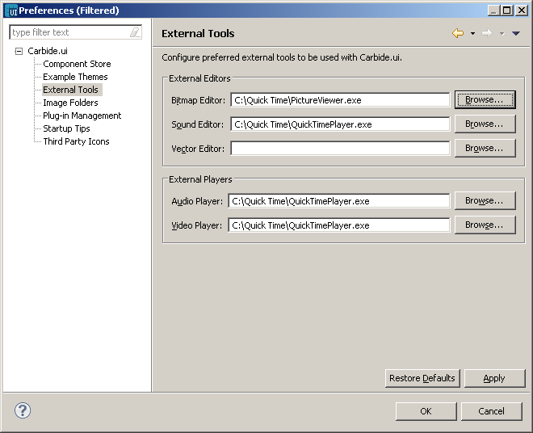

External tools - editors and
players
Note:
Before you can configure
the external editors for Carbide.ui, you need to have your preferred
external editors installed on your computer.
- In the menu bar, select Window
-> Preferences.
- In the tree view on the
left, select Carbide.ui ->
External Tools.

Figure:
External Tools
- You can also select External
Audio and Video Players.
You have now configured your external editors and the audio and video players
tool.